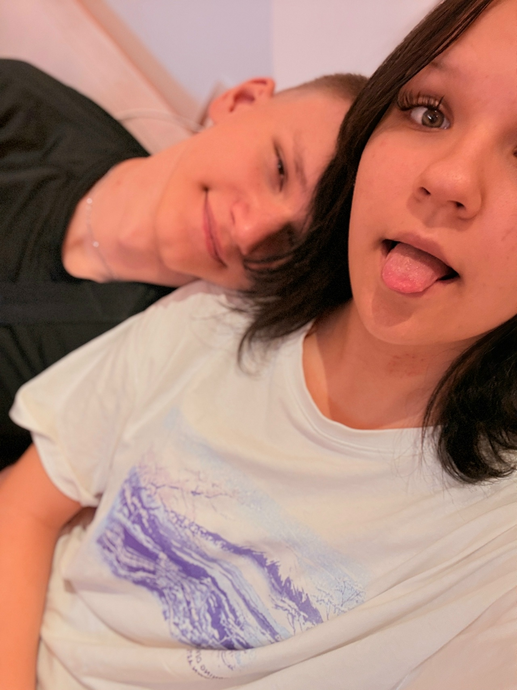
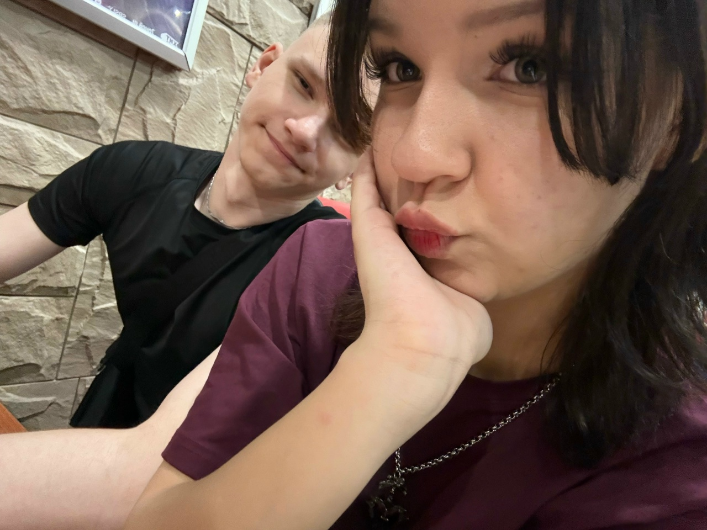
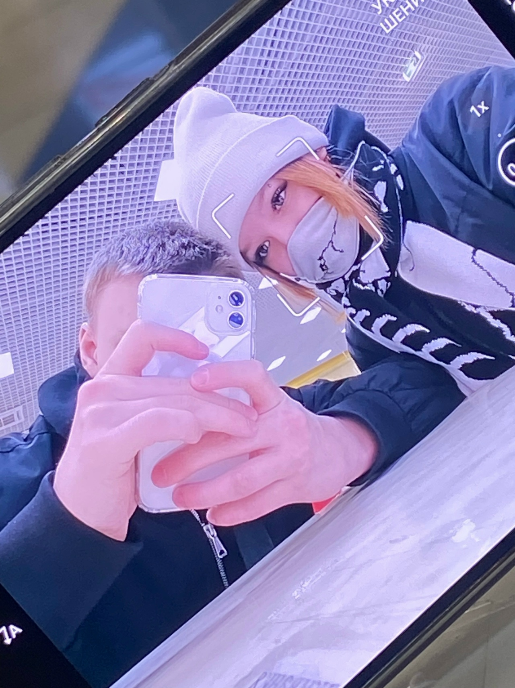
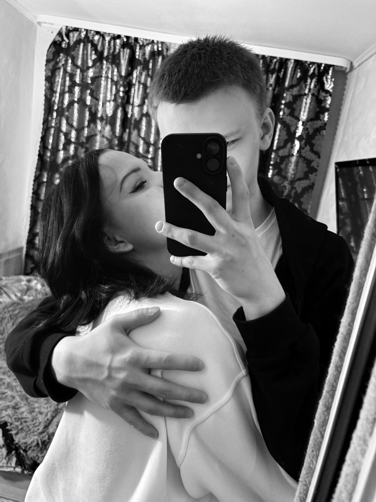
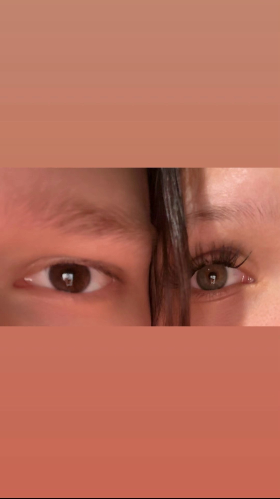
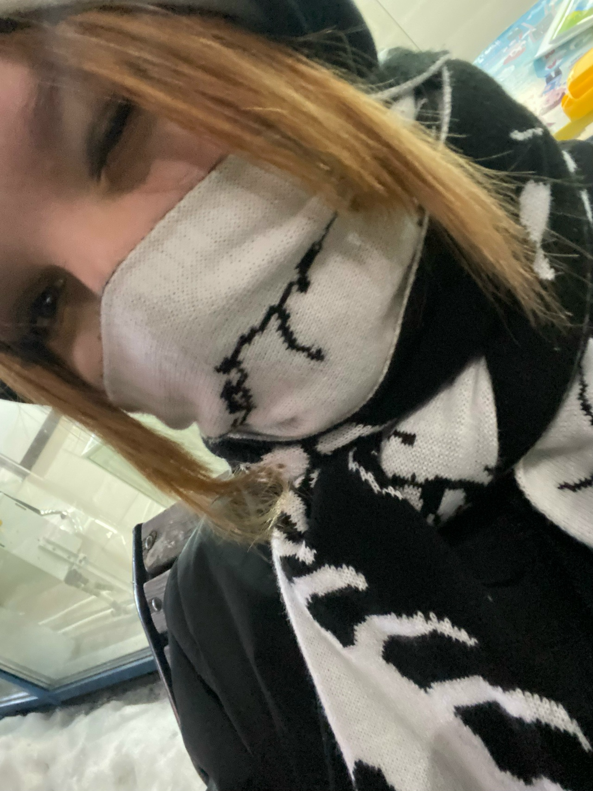
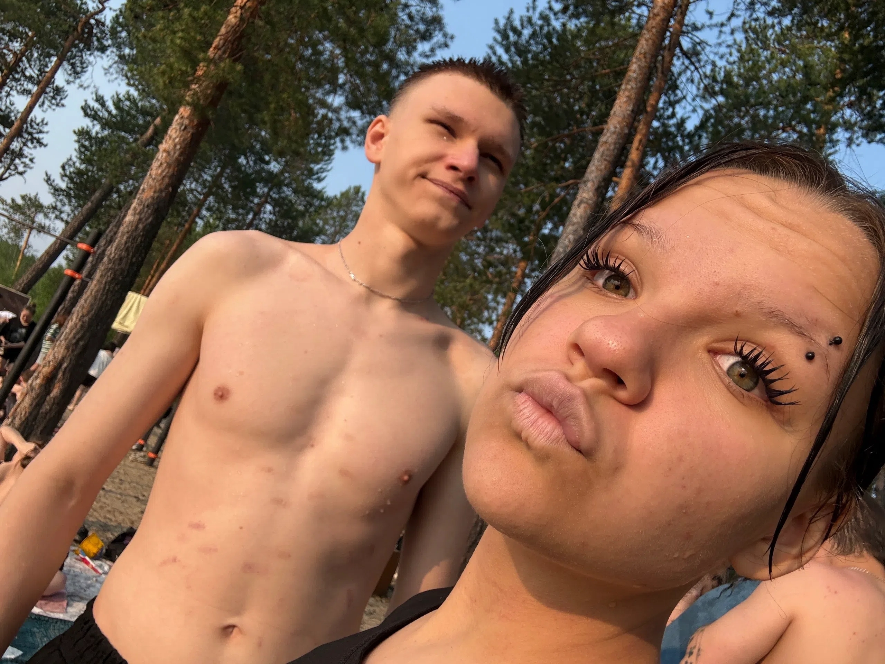
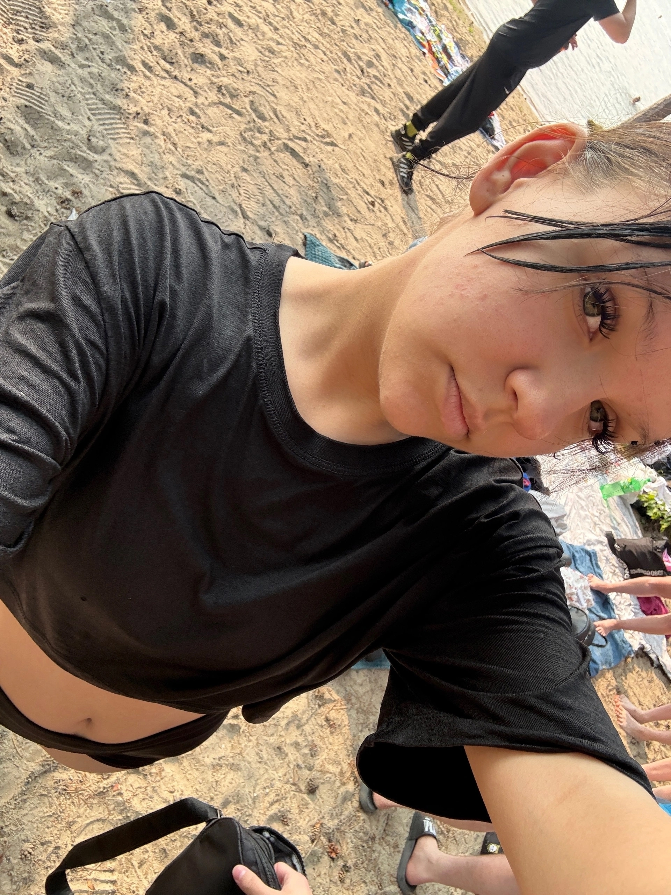

Слушать внимательнее
Не перебивать, не угадывать за тебя, а правда понимать, что ты чувствуешь.
если коротко
Я сделал это место, чтобы напомнить: у нас есть много нежности, смешных кадров, объятий, разговоров и причин не сдаваться друг на друга.
наш курс
Не перебивать, не угадывать за тебя, а правда понимать, что ты чувствуешь.
Говорить мягче, даже когда сложно, и выбирать нас вместо обид.
Не привыкать к твоей заботе, красоте и теплу, а благодарить за это чаще.
Становиться лучше не на словах, а поступками, которые ты можешь почувствовать.
важное
С улыбкой, усталостью, капризами, мечтами, тишиной и всем, что у тебя внутри. Мне хочется, чтобы ты знала: любовь - это не только красивые слова, а ежедневная забота.
наш путь
моменты








живой момент
Иногда один короткий фрагмент хранит больше, чем длинный текст: настроение, голос, движение и ощущение, что это было по-настоящему.
чтобы не забывать
Даже если трудно, потому что молчание не должно становиться стеной.
Не доказывать, кто прав, а вспоминать, что мы на одной стороне.
Иногда простая прогулка или чай вместе лечат лучше любых громких обещаний.
Каждый день, спокойно и по-настоящему.
личное
Я не хочу, чтобы этот сайт был просто красивой страницей. Пусть он будет напоминанием мне: любовь нужно подтверждать вниманием, терпением, поступками и нежностью.
Я хочу, чтобы у нас получалось. Чтобы мы росли, разговаривали, смеялись, обнимались крепче после сложных дней и берегли то, что между нами.